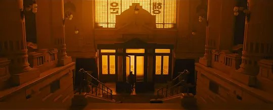

Utilizing drone to survey the abandoned city for signs of life...
When K arrives at the source of the heat signature at the other end of the city, he discovers a beehive placed among erotic statues.
While examining the beehive, K hears a piano.
Vintage Casino

K walks the interior of the casino very cautiously until he finally encounters Rick Deckard and his dog.
Deckard holds K at gunpoint, and asks what he is doing there. After K responds that he is there to ask him some questions, Deckard fires on K, who is able to jump out of Deckard's sights quickly enough to avoid being shot.
Deckard then follows an unarmed K into the casino's showroom, where K is able to disarm Deckard and convince him to answer his questions.
The two then sit together at the bar of Deckard's penthouse in the casino, where after a heated exchange,
Deckard reveals that the name of the mother of his child was Rachael and that before the birth of the child, he chose to leave a pregnant Rachael under the protection of the replicant freedom movement.
Given the dangers at the time with the increasing persecution of Nexus-8 replicants (due to their new natural lifespans) by human supremacy movements,
Deckard considered leaving Rachael with Sapper and the freedom movement to be the safest option.
After mentioning that "to love someone, sometimes you have to be a stranger," a very emotional Deckard walks out, leaving K sitting at the bar.
Moments later, Luv and her men attack and kidnap Deckard, leaving a severely wounded K for dead.
He is later rescued by the replicant freedom movement.
"Rachael had a daughter. With my own eyes, I saw her come." "It was a boy that you hid." "That is just a piece of the puzzel. You imagineed it was you?
You did. We all wish it was.
"That's why we believe. Someone lived this. Yes." Freya urges K to prevent Wallace from uncovering the secrets of replicant reproduction by any means necessary, including killing Deckard.